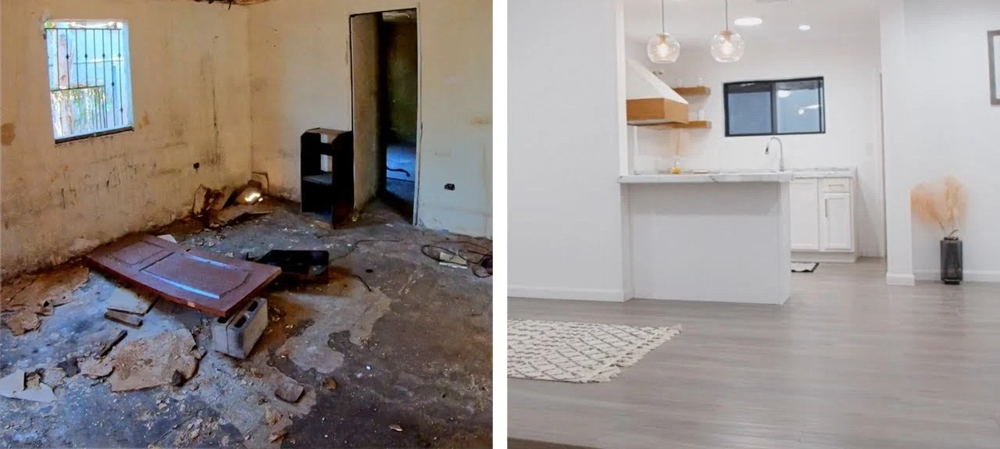

Inversión · Departamentos y PH · Octubre 2026
Flipping inmobiliario
Hasta cuánto pagar para que el número cierre
Hasta cuánto pagar para que el número cierre
Comprar para reciclar, hacer obra y vender. El método para calcular el precio máximo de compra, un ejemplo completo, los costos que reducen la ganancia y los errores que más caro salen.

Matías Leiblich
Ingeniero Civil · Real Estate